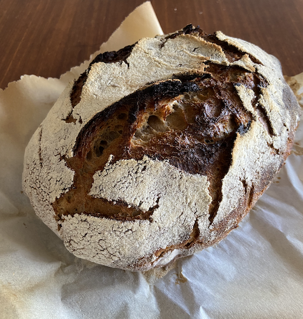

Ingredients
- 90 grams sourdough starter, fed and ready!
- 375 grams room temperature or cool water
- 464 grams bread flour
- 1 tbsp kosher salt
Instructions
- In a large bowl, mix starter and water.
- Add flour and stir until will-mixed.
- Cover with a damp kitchen towel. Wait 40 minutes.
- Add kosher salt by sprinkling it over surface. Then, with wet hands, poke it into the dough.
- With wet hands, "stretch" the dough up, lifting first from one side, then from the opposite. Then "fold" the dough over. Cover with a damp towel again.
- Over the next couple of hours, complete another three sets of "stretch" and "folds." (This is not an exact science! Whenever you remember, do a set.)
- Let rise until doubled. The dough should look pillowy and maybe have a few bubbles. It should feel stretchy and flexible if you pick it up. In the summer, this takes 12 hours or less. In the winter, sometimes as long as 18 hours.
- With floured hands, gently shape the dough into a ball. Place it in a floured (I use rice flour) banneton.
- Cover with damp cloth. Let rise again. If it's hot or you're not ready to bake: put it in the fridge. This can be as short as a couple of hours or overnight. If it's normal temperature: let rise in banneton for a couple of hours.
- Place a dutch oven (with lid) in the oven at 500 for 30 minutes. If your dough is in the fridge, bring it out now.
- Take a piece of parchment paper large enough to cover the banneton. Upend the dough onto the parchment.
- Using extra rice or regular flour on your hands, reshape the dough, tucking it into a nice ball.
- With a very sharp knife, make delicate slashes on the dough. (This will allow it to expand when it rises in the oven.)
- VERY CAREFULLY, remove the dutch oven from the oven. Plop parchment-lined dough in and put lid back on.
- Reduce oven heat to 475. VERY CAREFULLY place dutch oven back in the oven for 30 minutes.
- Reduce heat to 440 and remove the lid. Bake for another 20-25 minutes until you have a nice, dark crust.
- Remove bread from dutch oven and cool on a rack for at least 2 hours.